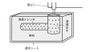

2026年
問題130 排水通気設備に関する用語とその説明との組合せとして，最も不適当なものは次のうちどれか．
(1)雨水貯留施設 雨水の流出抑制を目的とし，浸透舗装，浸透ます，浸透トレンチなどから構成される施設をいう．
(2)オフセット 排水立て管の配管経路を水平移動するため，エルボ又はベンド継手で構成されている移行部分をいう．
(3)ブランチ間隔 排水立て管に接続している各階の排水横枝管又は排水横主管の間の垂直距離が，2.5mを超える排水立て管の区間をいう．
(4)雨水排水ます 底部に150mm程度の泥だまりを有し，土砂を堆積させ，下水道へそれが流出するのを防ぐ排水ますをいう．
(5)トラップの封水強度 排水管内に正圧，又は負圧が生じたときのトラップの封水保持能力をいう．
2026年
問題130 正解（1） 頻出度AAA
雨水の流出抑制を目的とし，浸透舗装，浸透ます，浸透トレンチなどから構成される施設は「雨水浸透施設」である（2026-130-1図参照）．
2026-130-1図 雨水浸透施設

出典 株式会社 駿河設備
http://www.suruga-setsubi.co.jp/gesui1.html を基に作成
-(2) 排水管等のオフセット2026-130-2図参照．
2026-130-2図 オフセット
-(3)ブランチ間隔 ブランチとは横枝管のことで，「ブランチ間隔」≒「建物の階高」である（2026-130-3図参照）．
2026-130-3図 ブランチ間隔

-(4) 雨水排水ますは，雨水の敷地排水管の適所に，点検・清掃のために設ける．
2026-130-4図 雨水ます

-(5) トラップの破封の原因（本年問題107解説）参照．